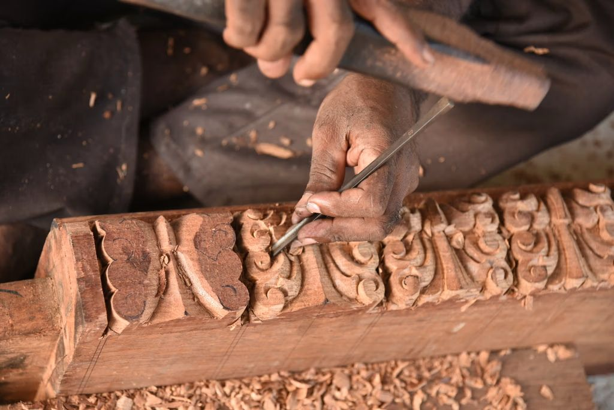
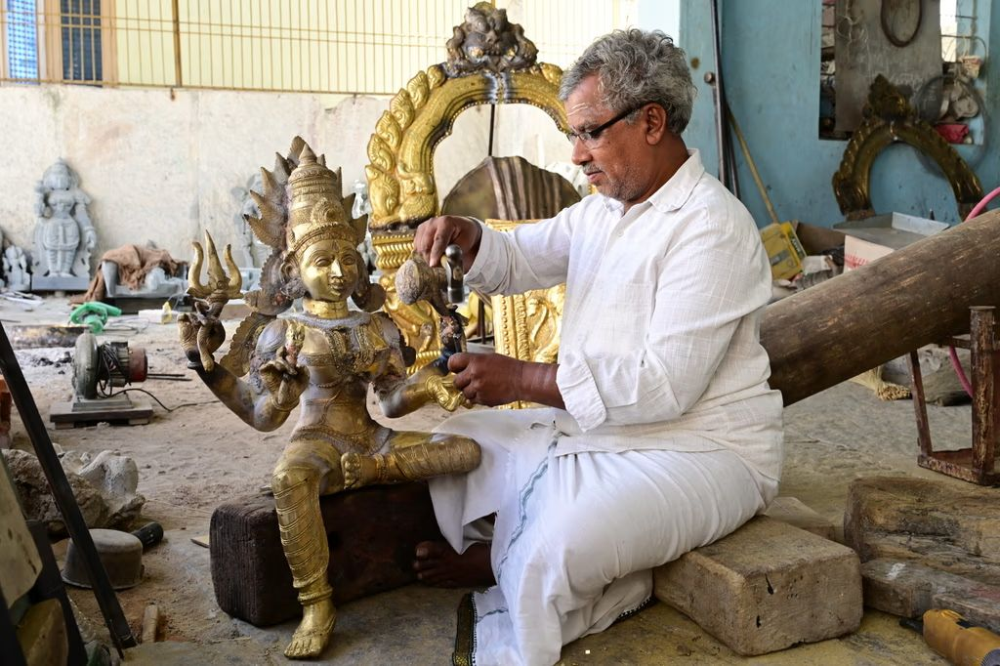
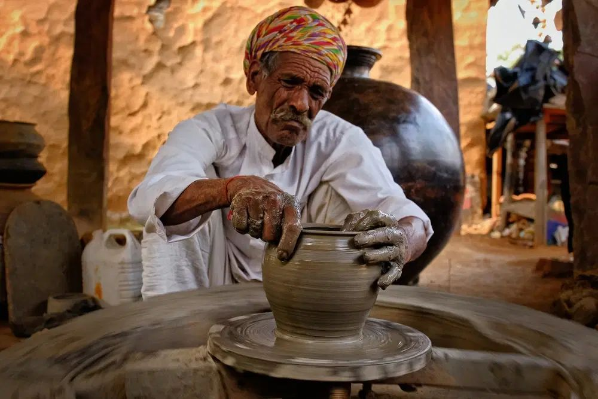

Indian Handicrafts · Ancient Wisdom · Modern World
Today's World for Handicrafts
From invisible artisans to global icons — the quiet revolution rewriting the story of Indian craft in the contemporary age.
SCROLL
"Choosing ancestral traditions over fading trends — deep culture over the thin veneer of convenience."
— The Philosophy Behind Indian Handicrafts
Chapter One
The "Mass-Produced" Fatigue
In an era of rapid consumption, the modern consumer is increasingly fatigued by the hollow perfection of factory-forged anonymity. A quiet but powerful movement is steering away from the disposable — toward soulful modern essentials that possess a tangible provenance.
🏭
Factory vs. Soul
Mass production creates hollow uniformity. Every machine-made piece is identical — stripped of the artisan's breath, story, and spirit that makes an object truly alive.
🌿
Soulful Essentials
Indian handicrafts are being reimagined as sophisticated, bespoke anchors for the contemporary home — shed of their reputation as dusty relics or mere tourist curios.
🔄
A Conscious Pivot
This revolution represents a deliberate choice: ancestral traditions over fading trends, deep culture over the thin veneer of convenience and disposability.
✦ ✦ ✦
Chapter Two
The Digital Identity of the "Invisible" Artisan
A quiet digital revolution is mapping the previously uncharted territory of the Indian interior. The most profound disruption in the craft sector is the transition from an opaque, localized model to a transparent, end-to-end digital network — a systemic rebirth of the artisan's agency.
01
Pehchan Initiative
A staggering 1.3 lakh artisans are now enrolled under the Pehchan program, creating a national database of master skillsets — giving the invisible a documented identity.
02
Direct Impact
Approximately 0.1 lakh artisans have already bypassed traditional barriers to benefit directly from digitized services, reaching markets once closed to them.
03
Infrastructure for Empowerment
A dedicated handicraft helpline, online portals for stall allotments, and direct financial support are modernizing the artisan's access to opportunity.
04
Disintermediation
By removing predatory middlemen who historically diluted the artisan's profit, the government ensures the value of the craft returns to its true source.

By the Numbers
The Scale of Change
📜
1.3L
Artisans enrolled under the Pehchan digital identity program
🎋
28%
Of India's total bamboo resources concentrated in North-Eastern states
🔥
0
Dhokra pieces ever replicated — the mold is destroyed with every casting
🌱
4
North-Eastern states holding bamboo monopoly: Manipur, Tripura, Arunachal, Assam

Chapter Three
The 28% Powerhouse: North-East India's Bamboo Monopoly
The North-Eastern states don't just produce bamboo — they hold a resource monopoly that is effectively the "green gold" of the Indian design landscape. Sustainability here was never a trend; it was always the standard.
🌿
Resource Scale
Approximately 28% of India's total bamboo resources are concentrated within the North-Eastern region — a strategic stronghold in the global green economy.
🧺
Industrial Utility
Artisans transform raw resources into a sophisticated array — from intricate mats and baskets to structurally resilient furniture, proving craft scales with imagination.
⚙️
Technical Sophistication
Split-bamboo weaving engineers uniform strips into complex shapes — proving that sustainability was an indigenous standard long before it became a marketing buzzword.
The "Lost Wax" Paradox
Why No Two Dhokra Pieces Are Ever Alike — in a world dominated by 3D printing and digital replication, the ancient Dhokra art of Chhattisgarh offers a refreshing technical paradox. Mass production is a literal impossibility.
Chapter Four
Dhokra: The Art That Cannot Be Copied
The Dhokra craft uses the "lost wax" metal casting method — a labour-intensive journey from clay to brass. And because the mold is destroyed in the process of releasing the metal, the twin is never born.
🏺
The Technical Process
Dhokra utilizes the "lost wax" metal casting method — a labour-intensive journey from clay to brass, creating everything from lamps to tribal figurines.
🔥
Handmade Integrity
The mold is destroyed in the process of releasing the metal. Because the original form is "lost," the twin is never born — each piece is eternally singular.
💎
The Luxury Paradox
In the high-end market, Dhokra's value lies in its failure to produce a replica — an artisanal honesty that serves as the ultimate counter-narrative to the assembly line.
✦ ✦ ✦
Chapter Five
Sustainability is the Original Legacy
For the Indian artisan, environmental preservation is a historical standard rather than a recent pivot. The use of natural materials like Sabai grass and organic pigments is a testament to a legacy where craft and ecology are inextricably linked.
I
Sabai Grass — Odisha, Jharkhand & West Bengal
Sun-dried and hand-twisted into ropes, used for handwoven baskets and mats. A significant export that supports rural livelihoods while reducing soil erosion in hilly regions.
II
Ecological Function
Beyond aesthetics, the harvesting of Sabai grass by tribal communities serves a vital ecological role — stabilizing slopes and preserving the earth beneath their feet.
III
Mineral Pigments — Rajasthan Miniatures
Aesthetic brilliance achieved through natural pigments and precious metals like gold and silver, applied to handmade Waslis (paper) — beauty that doesn't cost the earth.

Chapter Six
From Utility to "Soul"
Modern curators are leading a philosophical shift — rebranding traditional utility for the modern urban sensibility. The focus has migrated from the object's function to its soul: its ability to create emotional resonance within a living space.
🏠
Reimagined Portfolio
Traditional skills applied to contemporary needs — Assorted Agate Stone Knobs, Ceramic Chai Glasses with Stands, "Face Design" Serving Trays — where heritage meets daily life.
🎨
Curated Aesthetics
By blending the skills of various artisans with local, natural materials, curators create collections designed to be "not only good for your home but also good for your soul."
✨
Market Response
The market is responding to this shift toward "positive vibes" and "classy" aesthetics — consumers choosing character, story, and meaning over mere function.
"Amazing... we are using it as a showpiece and candle holder as well — a must buy for ethnic home decor."
— Akshay, Customer of Indian Artisans
A Choice for the Conscious Consumer
"When you purchase a handcrafted piece, are you just buying a product — or are you becoming a patron of a living history?"
The journey of Indian handicrafts — from local tribal necessity to premium global export — represents one of the most significant cultural transitions of our time. We are no longer just observing the survival of a craft; we are witnessing the elevation of ancient skills into the realm of high-end, ethical design. Every purchase is an act of preservation.